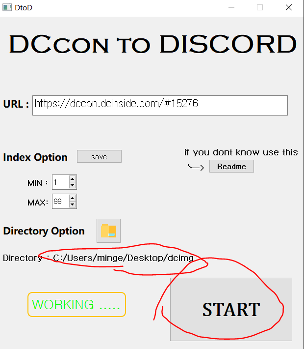

How To Use This ??
이 url칸에 디시콘 주소를 입력하면 돼
예를들어 ..
이 디시콘 중에 만두콘을 다운받고 싶다면
우클릭을 눌러서 링크 주소 복사를 눌러
저기 url 칸에 붙여넣고
1. index option은
여기중에서 몇번째 부터 몇번째까지 다운받을지 정하는거고
다 다운받을거면 그대로 냅둬
그리고 2번은 사진을 저장할 폴더를 정하는거야

여기 스타트를 누르면...
짠 ! 저장 완료 !